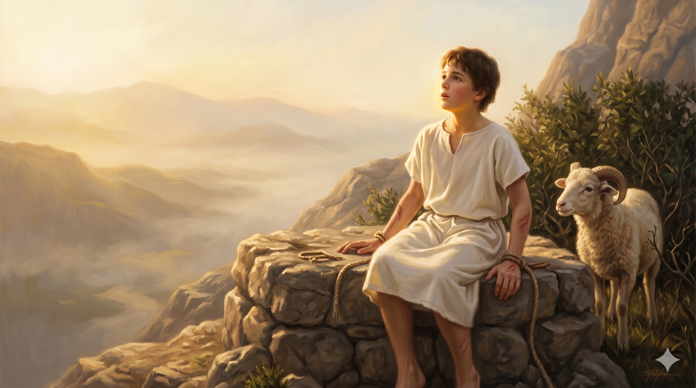
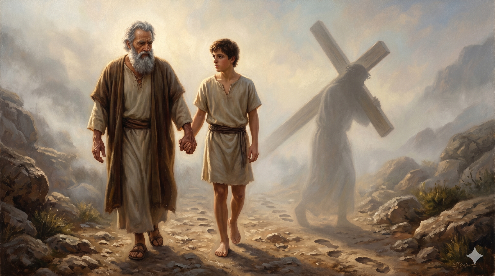

모리아 산정의 동튼 새벽, 흰 옷을 입은 이삭이 제단 위에서 천천히 일어나 앉는다. 그의 손목에는 풀린 끈 자국이 희미하게 남아 있고, 옆에는 가시덤불에서 풀려난 어린 양 한 마리가 조용히 그를 바라본다. 산 아래로 펼쳐진 광야의 새벽빛은 마치 죽음의 골짜기를 통과한 자에게만 보이는 또 다른 첫 새벽처럼, 비밀스러운 황금빛으로 그의 얼굴을 감싼다.
아브라함은 시험을 받을 때에 믿음으로 이삭을 드렸으니 그는 약속들을 받은 자로되 그 외아들을 드렸느니라 그에게 이미 말씀하시기를 네 자손이라 칭할 자는 이삭으로 말미암으리라 하셨으니 그가 하나님이 능히 죽은 자 가운데서 다시 살리실 줄로 생각한지라 비유컨대 그를 죽은 자 가운데서 도로 받은 것이니라 — 히브리서 11:17–19
우리는 모리아 산의 이야기를 늘 아브라함의 믿음으로 읽어 왔습니다. 그리고 그것은 옳습니다. 그러나 히브리서의 저자는 그 사건을 다시 한 번 들여다보면서, 우리가 잘 보지 못했던 한 사람의 운명에 조용히 빛을 비춰 줍니다 — 바로 이삭입니다. 히브리서 11:19는 충격적인 한 마디로 모리아 산의 사건을 요약합니다. "비유컨대 그를 죽은 자 가운데서 도로 받은 것이니라." 곧 이삭은 비유적 의미에서 이미 한 번 죽은 자였고, 한 번 다시 살아난 자였다는 뜻입니다. 아브라함의 마음 안에서, 그리고 하나님의 시간표 안에서, 그 산 위에서 이삭은 이미 드려진 제물이었습니다. 그가 다시 산을 내려왔을 때, 그것은 단순히 살아남은 자가 내려온 것이 아니라, "죽음에서 받아 안긴 자"가 내려온 것이었습니다. 신약은 우리에게 이 한 줄로 모리아의 의미를 영원히 새롭게 합니다 — 이삭은 살아남은 자가 아니라, 부활한 자입니다. 적어도 비유의 차원에서, 그는 죽음을 통과한 첫 사람이었습니다.
그렇다면 이삭은 단순히 한 가족의 외아들이 아니라, 사천 년 후에 오실 또 다른 외아들 — 진짜 외아들 — 의 첫 그림자였습니다. 하나님이 자기 외아들을 아끼지 아니하시고 우리 모두를 위해 내어 주신 그 갈보리의 새벽이, 모리아 산 위에서 이미 한 번 그림자로 미리 연주되었던 것입니다. 아브라함의 손에 들린 칼은 멈추었지만, 사천 년 후 골고다의 십자가에서는 그 칼이 멈추지 않았습니다. 모리아 산에서는 어린 양이 이삭 대신 죽었지만, 갈보리에서는 하나님의 어린 양이 우리 모두를 대신해 죽으셨습니다. 그러므로 이삭의 일생을 한 줄로 요약하라면, 우리는 더 이상 "조용한 둘째 세대 족장"이라고 부를 수 없습니다. 그는 부활의 첫 그림자였고, 모리아의 새벽은 부활주일 새벽의 머나먼 예고편이었습니다. 그가 산을 내려와 평생 우물을 파고, 들에서 묵상하고, 라헬과 야곱을 품으며 산 그 모든 시간이 — 사실은 "죽음에서 받아 안긴 자가 받은 덤의 시간"이었습니다.

모리아 산을 내려오는 두 사람 — 노인의 손과 청년의 손이 굳게 맞잡혀 있다. 그들의 발자국 옆으로, 같은 길 위에 또 다른 한 분의 그림자 — 십자가를 지신 그리스도의 윤곽이 새벽 안개 사이로 함께 걸어가신다.
이삭의 일생을 다시 보면, 우리는 우리 자신의 삶을 새로운 눈으로 보게 됩니다. 우리에게도 모리아의 산이 있었습니다. 손에 거머쥐고 있었던 무엇인가를 하나님 앞에 내려놓아야 했던 그 새벽, 정말로 끝났다고 생각했던 그 어떤 일, 다시는 회복되지 않을 거라 믿었던 그 어떤 관계 — 그러나 시간이 한참 지난 후 돌아보니, 우리는 그 산을 내려와 다시 살고 있었습니다. 그것이 바로 "죽음에서 도로 받은 시간"입니다. 우리가 오늘 누리는 일상의 호흡, 오늘 마주하는 한 끼 식사, 오늘 잡는 누군가의 손 — 그 모든 것이 사실은 한 번 죽었다가 다시 받은 시간이라는 것을 인식할 때, 우리의 일상은 더 이상 평범하지 않습니다. 그것은 부활의 덤으로 주어진 거룩한 시간입니다.
그리고 또 하나 — 이삭이 모리아의 새벽을 지나간 그 한 번의 경험이 그의 평생을 조용히 빚어 갔습니다. 그가 들에서 묵상하기를 즐겨 한 사람이었던 이유, 다툼이 일어나면 우물을 양보하고 더 깊이 다른 곳을 판 사람이었던 이유, 화려한 사건 하나 없이도 한 세대를 묵묵히 이어 간 사람이었던 이유 — 그 모든 것의 뿌리에는 그가 한 번 죽음의 골짜기를 통과한 자였다는 사실이 있었습니다. 죽음에서 받은 자는 다시는 작은 일에 자기 목숨을 걸지 않습니다. 죽음에서 도로 받은 사람은 더 이상 잃을 것이 없는 사람입니다. 오늘 당신의 인내, 당신의 양보, 당신의 침묵 — 그것이 어쩌면 당신이 한 번 통과한 그 모리아 산의 흔적일지도 모릅니다.
이삭은 살아남은 자가 아니라, 죽음에서 다시 받은 자였습니다.
당신의 오늘은 평범한 하루가 아니라, 부활의 덤으로 받은 시간입니다.
오늘, 한 호흡 한 호흡을 새로 받은 생명처럼 들이쉬십시오.